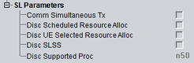

SL UE Capabilities
This section indicates UE capabilities for sidelink communication.

Sidelink capabilities
Support of simultaneous transmission of EUTRA and sidelink communication on different carriers.
Remote command:Support of transmission of discovery announcements based on network scheduled resource allocation.
Remote command:Support of transmission of discovery announcements based on UE autonomous resource selection.
Remote command:Support of sidelink synchronization signal (SLSS) transmission and reception for sidelink discovery.
Remote command:Number of processes supported for sidelink discovery.
Remote command: